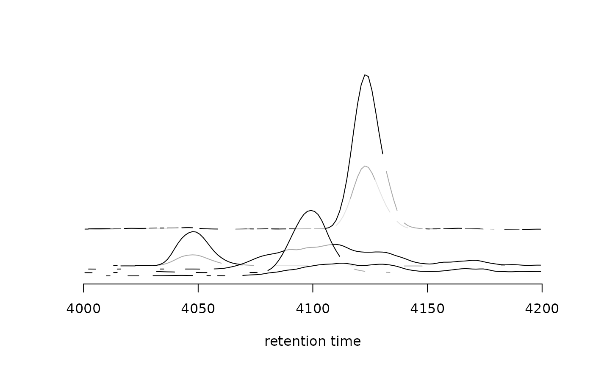
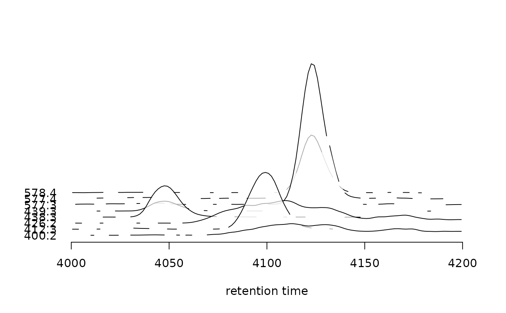
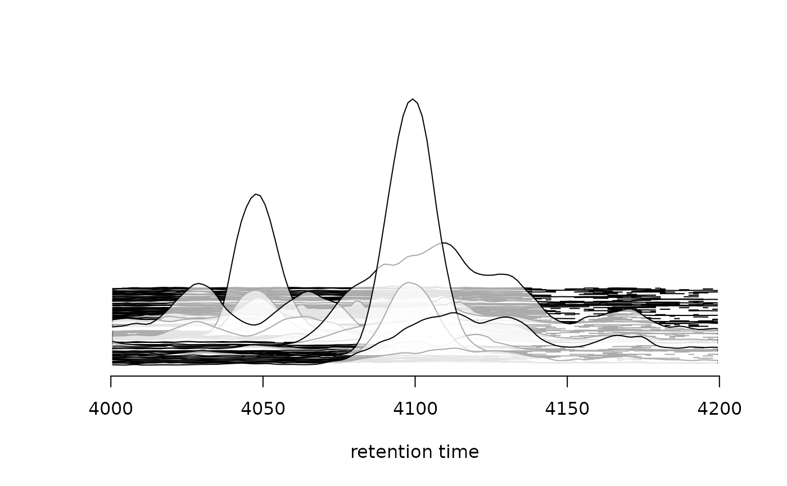
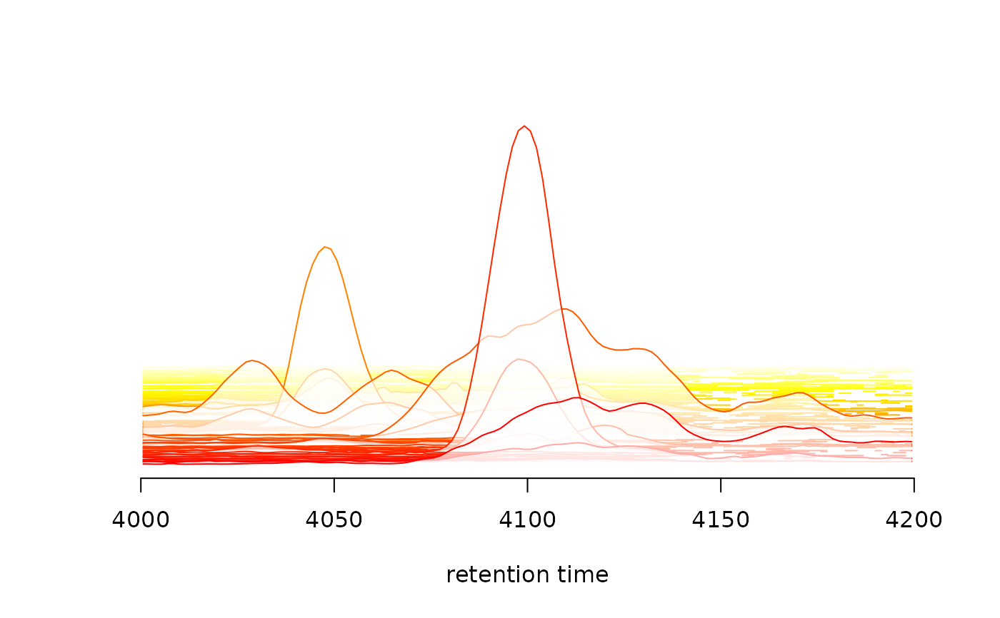
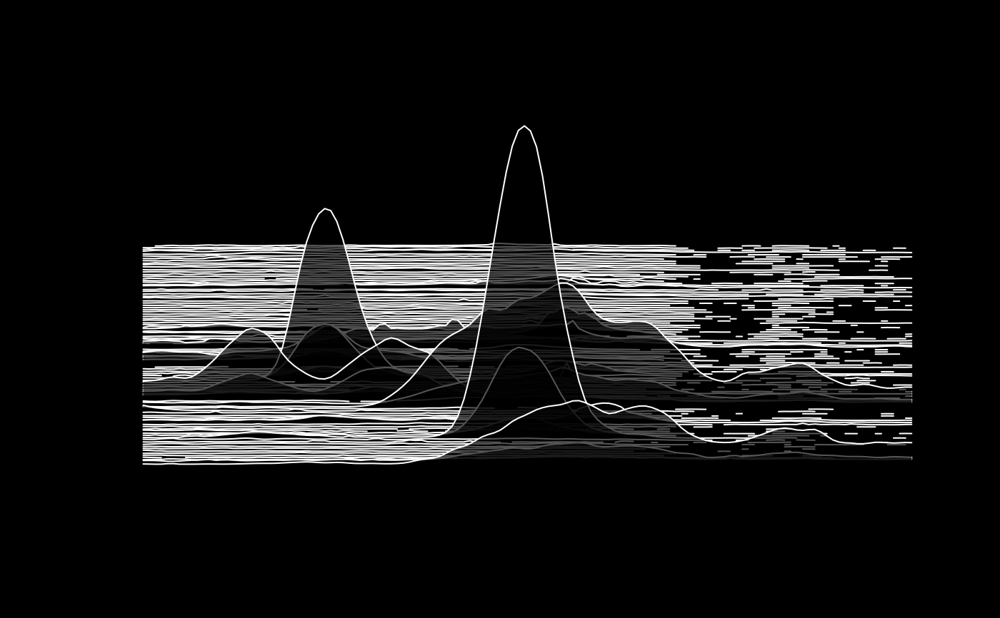

The joyPlot function creates a stacked plot of chromatograms of a
single sample (parameter sample). The name joyPlot was chosen as the
created plot can, depending on the data, look similar to the cover of the
Unknown Pleasures album
of the band Joy Division.
The method is implemented for XCMSnExp and MChromatograms objects:
For object being an MChromatograms: the function plots all
chromatograms stacked (overlappingly) on top of each others assuming that
the chromatograms are ordered by m/z (i.e. first row having the smallest,
last row the largest m/z).
For object being an XCMSnExp: the function will plot only
chromatograms for chromatographic peaks present in the specified m/z range
(parameter mz) and retention time range (parameter rt) in the sample
sample.
# S4 method for MChromatograms joyPlot( object, sample = 1, yoffset = 0.3, xlim = NULL, ylim = NULL, col = "#000000", peakBg = "#ffffffaa", type = "l", ylab = "", xlab = "retention time", spacing = c("relative", "equal"), legend = FALSE, ... ) # S4 method for XCMSnExp joyPlot( object, sample = 1L, mz = c(-Inf, Inf), rt = c(-Inf, Inf), yoffset = 0.3, col = "#000000", peakBg = "#ffffffaa", type = "l", ylab = "", xlab = "retention time", spacing = c("relative", "equal"), legend = FALSE, ... )
| object | an MChromatograms or XCMSnExp object. |
|---|---|
| sample |
|
| yoffset |
|
| xlim | optional |
| ylim | optional |
| col | color of the lines used to draw the chromatograms. Can be of
length 1 or equal |
| peakBg | background color for the chromatograms. Can be of length 1
or equal |
| type |
|
| ylab |
|
| xlab |
|
| spacing |
|
| legend |
|
| ... | additional arguments to be passed to the |
| mz | for |
| rt | for |
besides creating the plot the function returns (invisibly) the y positions of the individual chromatograms.
Johannes Rainer
library(xcms) ## Load a test data set with detected peaks data(faahko_sub) ## Update the path to the files for the local system dirname(faahko_sub) <- system.file("cdf/KO", package = "faahKO") one <- filterFile(faahko_sub, 1L) ## Plot stacked chromatograms for m/z slices containing chromatographic peaks joyPlot(one, rt = c(4000, 4200))## Plot the chromatograms equally spaced and showing also their m/z res <- joyPlot(one, rt = c(4000, 4200), spacing = "equal", legend = TRUE)## joyPlot returns the y position of the slices/chromatograms res#> [1] 0.00 19586.74 39173.49 58760.23 78346.97 97933.71 117520.46 #> [8] 137107.20## Disable transparency of individual peaks joyPlot(one, rt = c(4000, 4200), spacing = "equal", peakBg = "#ffffff")## To create a joy plot for the full data, not just the slices containing ## chromatographic peaks we have to first extract the respective ## chromatograms from the data. Below we define thus the m/z slices - with ## a rather large m/z range for each (i.e. of 1) in the m/z range 400 - 500 mzs <- seq(400, 500, by = 1) chr <- chromatogram(one, mz = cbind(mzs[-length(mzs)], mzs[-1]), include = "none", rt = c(4000, 4200)) joyPlot(chr)## And specyfying a different color for each chromatogram joyPlot(chr, col = heat.colors(nrow(chr)))## Finally, creating a plot that looks more like the album cover par(bg = "#000000") joyPlot(chr, col = "#ffffff", peakBg = "#000000aa", yoffset = 0.7)